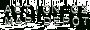
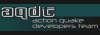
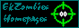
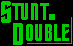

Official Action Quake2 sites
| - The official Action Quake2 page | |
|  | - The official AQ2 map resource page |
| - Get all of your skins and models from here | |
| - You will find loads of clans here |
AQ2 Mods for the mod
|  | - This is the AQ2 devolpment team, they make cool things to do with AQ2. Go and see for your self |
| - This is ProMagnoN's site. He was the one who created AQ2 single player. Check it out | |
| - These guys use ProMagnoN's AQ2 single player mod and use AQ2 maps for it | |
| - Get all your AQ2 Espionage missions and scenarios from here | |
| 3 Team AQ2 | - AQ2, 3 teams, nuff said :) |
| CGF for AQ2 | - This is going to be so good when it comes out. A bot program for AQ2 and a good one at that |
Australian AQ2 sites
AQ2 resource and fan sites
| Action World | - This site always has the latest news on AQ2 and counterstrike and AHL also looks great has nice members and has loads of info, just go and bookmark...good :) |
| - This is a site dedicated in keeping the Europe Aq2 scene in touch! | |
| - A very good resource page, go there now | |
| This is yet another great site, get into the zone! | |
| - This is a cool site indeed, check it out | |
|  | - This site has plenty of content to keep you busy |
| - This site has a bunch of map reviews. Worth a look | |
|  | - Very originall site with jumps for AQ2 maps |
| - Another good fan site |
Got a sweet AQ2 site? If so it should be listed here! Drop me a line